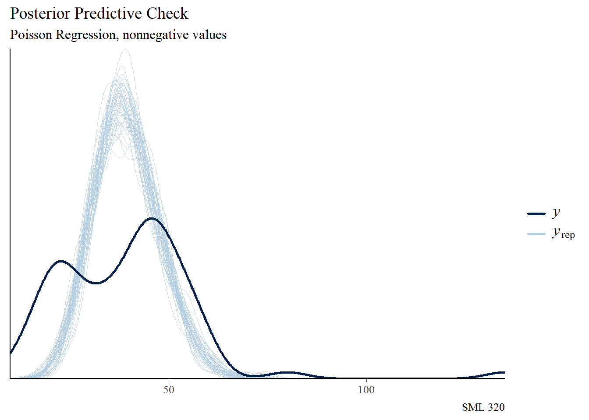

library("bayesrules")
library("bayesplot")
library("gt")
library("patchwork")
library("rstan")
library("rstanarm")
library("tidyverse")
knitr::opts_chunk$set(echo = TRUE)
# tickets_raw <- readr::read_csv("https://raw.githubusercontent.com/rfordatascience/tidytuesday/master/data/2019/2019-12-03/tickets.csv")Poisson Regression Models
Goal: Explore Poisson and Negative Binomial Regression Models
Data
source: TidyTuesday
2019-12-03 edition
-
- filtered to year 2017 data that had latitude/longitude
Data Wrangling
- extract
monthanddayfromdatetime - compute number of street sweeping violations per day
- make categorical variable
weekend
tickets_df <- tickets_raw |>
separate(issue_datetime, into = c("date", "time"), sep = " ") |>
separate(date, into = c("year", "month", "day"),
sep = "-", remove = FALSE) |>
select(date, month, day, lat, lon) |>
group_by(month, day) |>
mutate(violations = n(), .before = date) |>
ungroup()
tickets_df$day_of_week <- lubridate::wday(tickets_df$date, label = TRUE)
tickets_df <- tickets_df |>
mutate(weekend = day_of_week %in% c("Sat", "Sun")) |>
select(violations, month, day, weekend, lat, lon)
tickets_df$month <- as.numeric(tickets_df$month)
tickets_df$day <- as.numeric(tickets_df$day)
set.seed(320)
tickets_df_for_stan <- tickets_df |>
slice_sample(prop = 0.05)Variables
Response Variable
\(Y\): violations
- count variable: number of street sweeping violations per day
Prediction
How many street sweeping violations will there be on March 28?
Predictor Variables
- \(X_{1}\): month (1, 2, 3, etc.)
- \(X_{2}\): day (of month)
- \(X_{3}\): weekend (boolean)
- \(X_{4}\): latitude
- \(X_{5}\): longitude
Recap: Normal Model
\[Y = \beta_{0} + \beta_{1}X_{1} + \beta_{2}X_{2}\]
- \(Y\): number of street sweeping violations per day
- \(X_{1}\): month (1, 2, 3, etc.)
- \(X_{2}\): day (of month)
mod_normal <- stan_glm(violations ~ month + day,
data = tickets_df_for_stan,
family = gaussian,
chains = 4, iter = 5000*2,
refresh = 0, seed = 320)
Function
model_diagnostics <- function(the_stan_model){
p1 <- bayesplot::mcmc_trace(the_stan_model, size = 0.1) +
labs(title = "MCMC Traces")
print(p1)
p2 <- bayesplot::mcmc_dens_overlay(the_stan_model) +
labs(title = "Density Plots")
print(p2)
p3 <- bayesplot::mcmc_acf(the_stan_model) +
labs(title = "Autocorrelations")
print(p3)
# effective sample size
print("Effective Sample Size:")
print(bayesplot::neff_ratio(the_stan_model))
# split-R metric
print("R-Hat")
print(bayesplot::rhat(the_stan_model))
}model_diagnostics(mod_normal)[1] "Effective Sample Size:"
(Intercept) month02 month03 month04 month05 month06
0.06300 0.18470 0.19030 0.21290 0.19210 0.16740
month07 month08 month09 month10 month11 month12
0.17990 0.19480 0.22375 0.21370 0.22205 0.20810
day02 day03 day04 day05 day06 day07
0.07765 0.11980 0.08075 0.06810 0.07450 0.08970
day08 day09 day10 day11 day12 day13
0.09060 0.12655 0.08625 0.08960 0.06970 0.09080
day14 day15 day16 day17 day18 day19
0.07380 0.08285 0.08480 0.07525 0.10665 0.09255
day20 day21 day22 day23 day24 day25
0.08885 0.07235 0.12425 0.08060 0.07280 0.12020
day26 day27 day28 day29 day30 day31
0.07130 0.07865 0.07740 0.16275 0.08015 0.08770
sigma
0.75945
[1] "R-Hat"
(Intercept) month02 month03 month04 month05 month06
1.0014895 1.0011601 1.0012092 1.0007827 1.0010215 1.0008016
month07 month08 month09 month10 month11 month12
1.0008995 1.0010949 1.0005063 1.0008463 1.0006766 1.0011269
day02 day03 day04 day05 day06 day07
1.0012073 1.0007624 1.0010898 1.0012959 1.0010447 1.0008505
day08 day09 day10 day11 day12 day13
1.0010853 1.0005555 1.0009455 1.0009323 1.0011121 1.0007452
day14 day15 day16 day17 day18 day19
1.0013249 1.0011666 1.0012986 1.0011681 1.0008162 1.0007251
day20 day21 day22 day23 day24 day25
1.0006334 1.0014752 1.0005040 1.0010149 1.0011738 1.0007064
day26 day27 day28 day29 day30 day31
1.0013097 1.0010586 1.0011095 1.0003183 1.0009222 1.0010348
sigma
0.9998761 bayesplot::pp_check(mod_normal, nreps = 50) +
labs(title = "Posterior Predictive Check",
subtitle = "Normal Regression, but should we allow for negative values?",
caption = "SML 320")broom.mixed::tidy(mod_normal,
effects = c("fixed", "aux"),
conf.int = TRUE, conf.level = 0.90) |>
mutate_if(is.numeric, round, digits = 4)# A tibble: 44 × 5
term estimate std.error conf.low conf.high
<chr> <dbl> <dbl> <dbl> <dbl>
1 (Intercept) 26.7 6.54 15.8 37.9
2 month02 -2.22 4.41 -9.54 5.09
3 month03 -3.64 4.56 -11.1 3.90
4 month04 1.16 4.16 -5.66 8.05
5 month05 -2.86 4.29 -9.90 4.13
6 month06 2.74 4.22 -4.27 9.61
7 month07 7.68 4.06 1.02 14.3
8 month08 7.01 4.47 -0.320 14.2
9 month09 -2.62 5.09 -10.8 5.70
10 month10 1.76 4.58 -5.80 9.29
# ℹ 34 more rowsPoisson Model
\[\ln(\lambda) = \beta_{0} + \beta_{1}X_{1} + \beta_{2}X_{2}\]
- \(Y\): number of street sweeping violations per day
- \(X_{1}\): month (1, 2, 3, etc.)
- \(X_{2}\): day (of month)
mod_pois <- stan_glm(violations ~ month + day,
data = tickets_df_for_stan,
family = poisson, # changed here
chains = 4, iter = 5000*2,
refresh = 0, seed = 320)model_diagnostics(mod_pois)[1] "Effective Sample Size:"
(Intercept) month day
0.99140 0.99975 0.94765
[1] "R-Hat"
(Intercept) month day
1.000038 1.000006 0.999916 bayesplot::pp_check(mod_pois, nreps = 50) +
labs(title = "Posterior Predictive Check",
subtitle = "Poisson Regression, nonnegative values",
caption = "SML 320")
broom.mixed::tidy(mod_pois,
effects = c("fixed", "aux"),
conf.int = TRUE, conf.level = 0.90) |>
mutate_if(is.numeric, round, digits = 4)# A tibble: 4 × 5
term estimate std.error conf.low conf.high
<chr> <dbl> <dbl> <dbl> <dbl>
1 (Intercept) 3.58 0.0233 3.54 3.62
2 month 0.0357 0.0027 0.0315 0.04
3 day -0.0087 0.0009 -0.0102 -0.0071
4 mean_PPD 39.4 0.467 38.7 40.2 Poisson Regression
Poisson Data Model
- count response variable \(Y_{i}\) (per unit of time)
- rate parameter \(\lambda_{i}\)
- likelihood
\[Y_{i} | \lambda_{i} \sim \text{Pois}(\lambda_{i})\]
Expectation
The expected number \(Y_{i}\) predicted by values \(X_{ij}\) (over \(j\) predictor variables) captured by parameter \(\lambda_{i}\) is
\[\text{E}(Y_{i} | \lambda_{i}) = \lambda_{i}\]
Log_Link Function
\[Y_{i} | \beta_{0}, \beta_{1}, \beta_{2} \sim \text{Pois}(\lambda_{i}) \quad\text{with}\quad \ln(\lambda_{i}) = \beta_{0} + \beta_{1}X_{i1} + \beta_{2}X_{i2}\] \[\text{OR}\] \[Y_{i} | \beta_{0}, \beta_{1}, \beta_{2} \sim \text{Pois}(\lambda_{i}) \quad\text{with}\quad \lambda_{i} = e^{\beta_{0} + \beta_{1}X_{i1} + \beta_{2}X_{i2}}\]
Model Assumptions
- Structure of the data: observed data are independent
- Structure of the response variable: \(Y\) has a Poisson structure that seeks a discrete count of events (per unit time)
- Structure of the relationship: the logged average \(Y\) can be written as a linear combination of the predictors
\[\lambda_{i} = e^{\beta_{0} + \beta_{1}X_{i1} + \beta_{2}X_{i2}}\]
- Structure of the variability in \(Y\):
\[\text{E}(Y) = \text{Var}(Y) = \lambda\]
editor’s note: better visuals by Professors Roback and Legler at St Olaf College
Interpreting Coefficients
Intercept
When \(X_{1} = 0, X_{2} = 0, ...\)
\[\text{E}(Y) = \lambda = e^{\beta_{0}} \quad\rightarrow\quad \beta_{0} = \ln(\lambda)\]
- \(\beta_{0}\): logged average
- \(e^{\beta_{0}}\): average value
Rates
When we control other predictors and increase \(X_{i}\) by one unit,
\[\beta_{i} = \ln(\lambda_{x+1}) - \ln(\lambda_{x}) \quad\rightarrow\quad e^{\beta_{i}} = \displaystyle\frac{\lambda_{x+1}}{\lambda_{x}}\]
- \(\beta_{i}\): change in logged average
- \(e^{\beta_{i}}\): multiplicative change in average value
Poisson Model Usage
Coefficients
broom.mixed::tidy(mod_pois, effects = c("fixed", "aux")) |>
mutate_if(is.numeric, round, digits = 4)# A tibble: 4 × 3
term estimate std.error
<chr> <dbl> <dbl>
1 (Intercept) 3.58 0.0233
2 month 0.0357 0.0027
3 day -0.0087 0.0009
4 mean_PPD 39.4 0.467 \[e^{\beta_{1}} = e^{0.0357} \approx 1.0363\]
As we go from one month to the next, the number of street sweeping violations increases by about 3.6 percent.
\[e^{\beta_{2}} = e^{-0.0087} \approx 0.9913\]
As we go from one day to the next, the number of street sweeping violations decreases by about 0.9 percent.
Prior Distributions
rstanarm::prior_summary(mod_pois)Priors for model 'mod_pois'
------
Intercept (after predictors centered)
~ normal(location = 0, scale = 2.5)
Coefficients
Specified prior:
~ normal(location = [0,0], scale = [2.5,2.5])
Adjusted prior:
~ normal(location = [0,0], scale = [0.78,0.28])
------
See help('prior_summary.stanreg') for more detailsFor the prior distributions,
\[e^{\beta_{0}} \in (e^{-5}, e^{5}) \approx (0, 149)\]
- the average number of street sweeping violations per day is in between zero and 149
\[e^{\beta_{1}} \in (e^{-1.56}, e^{1.56}) \approx (0.2101, 4.7588)\]
- moving from one month to the next, the percent change in the number of street sweeping violations per day is in between 21 and 476 percent
\[e^{\beta_{2}} \in (e^{-0.56}, e^{0.56}) \approx (0.5712, 1.7507)\]
- moving from one day to the next, the percent change in the number of street sweeping violations per day is in between -43 and 175 percent
\[\begin{array}{rcl} Y_{i}|\beta_{0},\beta_{1},\beta_{2} & \sim & \text{Pois}(\lambda_{i}) \text{ with }\ln(\lambda_{i}) = \beta_{0} + \beta_{1}X_{i1} + \beta_{2}X_{i2} \\ \beta_{0c} & \sim & \text{N}(0, 2.5^{2}) \\ \beta_{1} & \sim & \text{N}(0, 0.78^{2}) \\ \beta_{2} & \sim & \text{N}(0, 0.28^{2}) \\ \end{array}\]
Posterior Prediction Interval
these_predictions <- rstanarm::posterior_predict(
mod_pois, newdata = data.frame(month = 3, day = 28))
credible_interval <- round(quantile(these_predictions, c(0.05, 0.95)))
subtitle_string <- paste0("90 Percent Credible Interval: (",
credible_interval[1], ", ",
credible_interval[2], ")")
bayesplot::mcmc_areas(these_predictions, prob = 0.9) +
labs(title = "Predictions for March 28",
subtitle = subtitle_string,
caption = "SML 320",
x = "number of street sweeping violations")Extended Model
\[\ln(\lambda) = \beta_{0} + \beta_{1}X_{1} + \beta_{2}X_{2} + \beta_{3}X_{3} + \beta_{4}X_{4}X_{5}\]
- \(Y\): number of street sweeping violations per day
- \(X_{1}\): month (1, 2, 3, etc.)
- \(X_{2}\): day (of month)
- \(X_{3}\): weekend (boolean)
- \(X_{4}X_{5}\): (possible interaction between) latitude and longitude
mod_pois2 <- stan_glm(violations ~ month + day + weekend + lat:lon,
data = tickets_df_for_stan,
family = poisson,
chains = 4, iter = 5000*2,
refresh = 0, seed = 320)model_diagnostics(mod_pois2)[1] "Effective Sample Size:"
(Intercept) month day weekendTRUE lat:lon
1.05365 0.95060 0.98565 0.81800 1.05340
[1] "R-Hat"
(Intercept) month day weekendTRUE lat:lon
0.9999961 1.0001868 0.9999822 1.0001260 0.9999959 bayesplot::pp_check(mod_pois2, nreps = 50) +
labs(title = "Posterior Predictive Check",
subtitle = "Extended Poisson Regression Model",
caption = "SML 320")\[\text{E}(Y) = \text{Var}(Y)??\]
mean(these_predictions)[1] 31.43845var(these_predictions) 1
1 31.7904Negative Binomial Regression
Motivation and Definition
Overdispersion
A random variable \(Y\) is overdispersed if the observed variability in \(Y\) exceeds the variability expected by the assumed probability model of \(Y\)
If the count data appears to be demonstrating overdispersion, consider using the negative binomial distribution.
Negative Binomial model
Let random variable \(Y\) be some count, \(Y\in\{0,1,2,…\}\), that can be modeled by the Negative Binomial with mean parameter \(\mu\) and reciprocal dispersion parameter \(r\):
\[Y|\mu,r \sim \text{NegBin}(\mu,r)\]
Then \(Y\) has conditional pmf
\[f(y|\mu,r) = \binom{y+r-1}{r}\left( \displaystyle\frac{r}{\mu+r} \right)^{r}\left( \displaystyle\frac{\mu}{\mu+r}\right)^{y} \text{ for } y\in\{0,1,2,...\}\]
with statistics
\[\text{E}(Y|\mu,r) = \mu \quad\text{and}\quad \text{Var}(Y|\mu,r) = \mu + \displaystyle\frac{\mu^{2}}{r}\]
Commentary
- for large \(r\), this distribution behaves like the Poisson distribution
- for small \(r\), and \(Y\) is overdispersed
- \(\text{Var}(Y) \neq \text{E}(Y)\)
Negative Binomial Model
\[\ln(\mu) = \beta_{0} + \beta_{1}X_{1} + \beta_{2}X_{2} + \beta_{3}X_{3} + \beta_{4}X_{4}X_{5}\]
- \(Y\): number of street sweeping violations per day
- \(X_{1}\): month (1, 2, 3, etc.)
- \(X_{2}\): day (of month)
- \(X_{3}\): weekend (boolean)
- \(X_{4}X_{5}\): (possible interaction between) latitude and longitude
mod_neg_bin <- stan_glm(violations ~ month + day + weekend + lat:lon,
data = tickets_df_for_stan,
family = neg_binomial_2, #changed here
chains = 4, iter = 5000*2,
refresh = 0, seed = 320)model_diagnostics(mod_neg_bin)[1] "Effective Sample Size:"
(Intercept) month day
1.46255 1.27635 1.47720
weekendTRUE lat:lon reciprocal_dispersion
1.33420 1.46210 1.47700
[1] "R-Hat"
(Intercept) month day
0.9998795 0.9999110 0.9998873
weekendTRUE lat:lon reciprocal_dispersion
0.9999143 0.9998797 0.9998440 Prior Distributions
model_priors <- rstanarm::prior_summary(mod_neg_bin)
model_priors #printPriors for model 'mod_neg_bin'
------
Intercept (after predictors centered)
~ normal(location = 0, scale = 2.5)
Coefficients
Specified prior:
~ normal(location = [0,0,0,...], scale = [2.5,2.5,2.5,...])
Adjusted prior:
~ normal(location = [0,0,0,...], scale = [ 0.78, 0.28,19.58,...])
Auxiliary (reciprocal_dispersion)
~ exponential(rate = 1)
------
See help('prior_summary.stanreg') for more details# model_priors$prior$adjusted_scale #after autoscalingFor the prior distributions,
\[e^{\beta_{0}} \in (e^{-5}, e^{5}) \approx (0, 149)\]
- the average number of street sweeping violations per day is in between zero and 149
\[e^{\beta_{1}} \in (e^{-1.56}, e^{1.56}) \approx (0.2101, 4.7588)\]
- moving from one month to the next, the percent change in the number of street sweeping violations per day is in between 21 and 476 percent
\[e^{\beta_{2}} \in (e^{-0.56}, e^{0.56}) \approx (0.5712, 1.7507)\]
- moving from one day to the next, the percent change in the number of street sweeping violations per day is in between -43 and 175 percent
\[e^{\beta_{3}} \in (e^{-39.16}, e^{39.16})\]
- [We have a vague prior for the coefficient of the categorical variable]
\[\begin{array}{rcl} Y_{i}|\beta_{0},\beta_{1},\beta_{2} & \sim & \text{NegBin}(\mu_{i},r) \text{ with }\ln(\mu_{i}) = \beta_{0} + \beta_{1}X_{i1} + \beta_{2}X_{i2} + ... \\ \beta_{0c} & \sim & \text{N}(0, 2.5^{2}) \\ \beta_{1} & \sim & \text{N}(0, 0.78^{2}) \\ \beta_{2} & \sim & \text{N}(0, 0.28^{2}) \\ \beta_{3} & \sim & \text{N}(0, 19.58^{2}) \\ \beta_{4} & \sim & \text{N}(0, 1.09^{2}) \\ r & \sim & \text{Exp}(1) \\ \end{array}\]
PPC
bayesplot::pp_check(mod_neg_bin, nreps = 50) +
labs(title = "Posterior Predictive Check",
subtitle = "Negative Binomial Regression Model",
caption = "SML 320")
Coefficients
Like in the Poisson regression models, the coefficents of negative binomial regression models are also desribed with the logarithmic transformation in mind.
broom.mixed::tidy(mod_neg_bin, effects = c("fixed", "aux"),
conf.int = TRUE, conf.level = 0.90) |>
mutate_if(is.numeric, round, digits = 4)# A tibble: 6 × 5
term estimate std.error conf.low conf.high
<chr> <dbl> <dbl> <dbl> <dbl>
1 (Intercept) 124. 24.9 82.2 165.
2 month 0.022 0.0066 0.0112 0.0329
3 day -0.0039 0.0023 -0.0077 -0.0002
4 weekendTRUE 0.879 0.160 0.627 1.15
5 lat:lon 0.04 0.0083 0.0262 0.0536
6 mean_PPD 39.5 1.16 37.6 41.4 \[e^{\beta_{1}} = e^{0.0220} \approx 1.0222\]
- As we go from one month to the next, the number of street sweeping violations increases by about 2.2 percent.
\[e^{\beta_{2}} = e^{-0.0039} \approx 0.9961\]
- As we go from one day to the next, the number of street sweeping violations decreases by about 0.04 percent.
\[e^{\beta_{3}} = e^{0.8791} \approx 2.4087\]
- Compared to a weekday, the expected amount of street sweeping violations on a weekend day is 241 percent higher (caution: sample size issue).
\[1.0 \notin (e^{0.0262}, e^{0.0536})\]
- We may have some evidence that \(\beta_{4} > 1.0\), or the notion that there may be an interaction effect between latitude and longitude
Posterior Prediction Interval
these_predictions <- rstanarm::posterior_predict(
mod_neg_bin, newdata = data.frame(month = 3,
day = 28,
weekend = FALSE,
lat = mean(tickets_df$lat),
lon = mean(tickets_df$lon)))
credible_interval <- round(quantile(these_predictions, c(0.05, 0.95)))
subtitle_string <- paste0("90 Percent Credible Interval: (",
credible_interval[1], ", ",
credible_interval[2], ")")
bayesplot::mcmc_areas(these_predictions, prob = 0.9) +
labs(title = "Predictions for March 28",
subtitle = subtitle_string,
caption = "SML 320",
x = "number of street sweeping violations")Dispersion
\[\text{E}(Y) = \text{Var}(Y)??\]
mean(these_predictions)[1] 33.85635var(these_predictions) 1
1 175.5899Summary
- If response \(Y\) is nonnegative count data, consider Poisson regression models
- If data is overdispersed, consider negative binomial regression models
- In these cases, carefully describe coefficients after the logarithmic transformation
Footnotes
- Poisson Regression by Professors Roback and Legler at St Olaf College
Session Info
sessionInfo()R version 4.3.2 (2023-10-31 ucrt)
Platform: x86_64-w64-mingw32/x64 (64-bit)
Running under: Windows 10 x64 (build 19045)
Matrix products: default
locale:
[1] LC_COLLATE=English_United States.utf8
[2] LC_CTYPE=English_United States.utf8
[3] LC_MONETARY=English_United States.utf8
[4] LC_NUMERIC=C
[5] LC_TIME=English_United States.utf8
time zone: America/New_York
tzcode source: internal
attached base packages:
[1] stats graphics grDevices utils datasets methods base
other attached packages:
[1] lubridate_1.9.3 forcats_1.0.0 stringr_1.5.1 dplyr_1.1.4
[5] purrr_1.0.2 readr_2.1.5 tidyr_1.3.1 tibble_3.2.1
[9] ggplot2_3.4.3 tidyverse_2.0.0 rstanarm_2.21.4 Rcpp_1.0.11
[13] rstan_2.32.5 StanHeaders_2.32.5 patchwork_1.1.2 gt_0.9.0
[17] bayesplot_1.10.0 bayesrules_0.0.2
loaded via a namespace (and not attached):
[1] gridExtra_2.3 inline_0.3.19 rlang_1.1.1 magrittr_2.0.3
[5] snakecase_0.11.0 matrixStats_1.0.0 e1071_1.7-13 compiler_4.3.2
[9] loo_2.6.0 callr_3.7.3 vctrs_0.6.5 reshape2_1.4.4
[13] pkgconfig_2.0.3 crayon_1.5.2 fastmap_1.1.1 ellipsis_0.3.2
[17] labeling_0.4.3 utf8_1.2.4 threejs_0.3.3 promises_1.2.1
[21] rmarkdown_2.24 tzdb_0.4.0 markdown_1.8 ps_1.7.5
[25] nloptr_2.0.3 xfun_0.40 jsonlite_1.8.7 later_1.3.1
[29] parallel_4.3.2 prettyunits_1.2.0 R6_2.5.1 dygraphs_1.1.1.6
[33] stringi_1.8.3 boot_1.3-28.1 knitr_1.43 zoo_1.8-12
[37] base64enc_0.1-3 httpuv_1.6.11 Matrix_1.6-1.1 splines_4.3.2
[41] igraph_1.4.3 timechange_0.3.0 tidyselect_1.2.0 rstudioapi_0.15.0
[45] yaml_2.3.8 codetools_0.2-19 miniUI_0.1.1.1 curl_5.0.2
[49] processx_3.8.1 pkgbuild_1.4.0 lattice_0.21-9 plyr_1.8.8
[53] withr_3.0.0 shiny_1.7.5 groupdata2_2.0.2 evaluate_0.21
[57] survival_3.5-7 proxy_0.4-27 RcppParallel_5.1.7 xts_0.13.1
[61] xml2_1.3.6 pillar_1.9.0 DT_0.28 stats4_4.3.2
[65] shinyjs_2.1.0 generics_0.1.3 hms_1.1.3 rstantools_2.3.1
[69] munsell_0.5.0 scales_1.2.1 minqa_1.2.5 gtools_3.9.4
[73] xtable_1.8-4 class_7.3-22 glue_1.6.2 janitor_2.2.0
[77] tools_4.3.2 shinystan_2.6.0 lme4_1.1-33 colourpicker_1.2.0
[81] grid_4.3.2 QuickJSR_1.1.3 crosstalk_1.2.0 colorspace_2.1-0
[85] nlme_3.1-163 cli_3.6.1 fansi_1.0.6 V8_4.3.0
[89] gtable_0.3.4 digest_0.6.33 farver_2.1.1 htmlwidgets_1.6.2
[93] htmltools_0.5.6 lifecycle_1.0.4 mime_0.12 shinythemes_1.2.0
[97] MASS_7.3-60